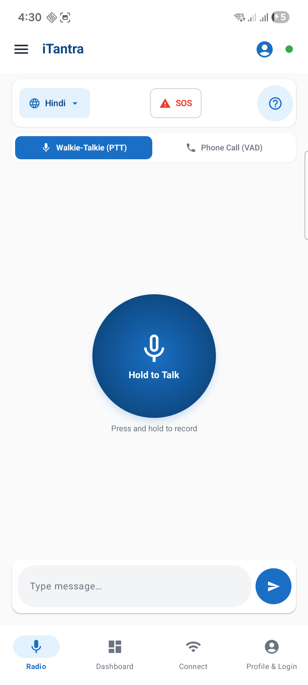
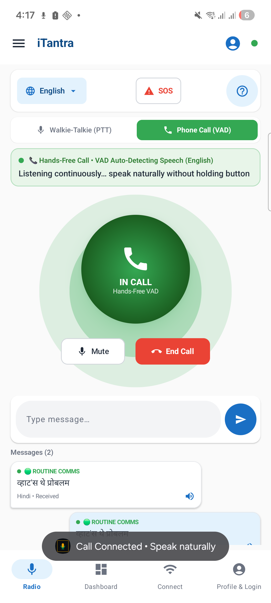

1
No cloud, no cellular
Cloud speech services cannot run without internet, so recognition and synthesis must happen on the phone itself.
iTantra turns speech into a 48-byte packet on the phone, sends it over LoRa, Wi-Fi or Bluetooth, and speaks it aloud on the other side. No internet, no cell tower, no cloud.

Floods, earthquakes and remote border posts lose cellular and internet first. Rescue teams fall back on radio links that were never built to carry voice.
Cloud speech services cannot run without internet, so recognition and synthesis must happen on the phone itself.
LoRa reaches 10–15 km but carries about 1 kbps. Codecs like Opus and AMR need many times that.
Responders using Hindi, Tamil or Bengali need to understand each other without a human relay.
Choose a link speed. The calculator compares how long a 5-second voice message takes to send as raw 64 kbps audio and as one iTantra packet.
Audio is never streamed. Each phone converts speech to a tiny message, and the receiving phone rebuilds the voice locally.

The mic records 16 kHz audio and voice detection removes wind and engine noise.
Quantised Vosk and Sherpa-ONNX models transcribe speech in about 120 ms.
Keywords such as “khatra”, “sos” and “madad” mark a message as Red SOS, Yellow alert or Routine.
Text is wrapped in a TantraPacket with a sequence number and CRC-16 checksum.
The packet goes out over LoRa, Wi-Fi UDP (port 8888) and Bluetooth RFCOMM, with 60-second duplicate suppression.
A phrase codebook maps operational messages between 10 Indian languages.
Piper synthesises natural voice on the receiver. SOS alerts also trigger continuous vibration until acknowledged.
A fixed binary frame designed to reject radio noise and drop corrupted packets silently.
| Field | Size | Purpose |
|---|---|---|
| Magic | 1 byte | Fixed 0x54 (“T”). Discards static and stray packets immediately. |
| Flags | 1 byte | Bit 7 Red SOS, bit 6 Yellow alert, bits 0–3 language ID (0–9). |
| Sequence | 2 bytes | Counter that removes duplicate echoes in a multi-path mesh. |
| Length | 2 bytes | Payload size, typically 30–80 bytes. |
| Payload | N bytes | Recognised sentence as compact UTF-8 text. |
| CRC-16 | 2 bytes | CCITT checksum, polynomial 0x1021. Failed frames are dropped. |
Hindi, English and Tamil run full offline models. The other languages use phonetic phrase codebooks.
In 10 dB acoustic noise, such as cyclone wind or rotor wash, recognition falls by roughly 8–12% without a directional microphone.
Two fallbacks cover this: a 100-phrase tactical codebook using 1-byte phrase IDs, and continuous vibration alerts that need no audio.
Vosk and Kaldi int8 models, Sherpa-ONNX runtime, Piper Indic synthesis and Silero voice activity detection.
TantraPacket v1, LoRa SX1262 and SX1278, UDP multicast on port 8888 and Bluetooth RFCOMM.
Kotlin, Jetpack Compose, Coroutines and Flow, a foreground service for radio listening and 16 KB page alignment for Android 15.
No. Speech recognition, packet framing and voice synthesis all run on the phone. Messages travel over LoRa, Wi-Fi hotspot UDP or Bluetooth.
About 48 bytes, including an 8-byte header and CRC. Standard voice needs 16,000 to 64,000 bits per second.
Hindi, English (India), Tamil, Telugu, Bengali, Marathi, Gujarati, Kannada, Malayalam, Punjabi and Odia.
Download the 28 MB APK from GitHub Releases or scan the QR code below with an Android phone. No account or sign-up is needed.
Scan the code with your camera, or download iTantra-v1.0-release.apk (v1.0.0, 28 MB). Requires Android 8.0 or later.